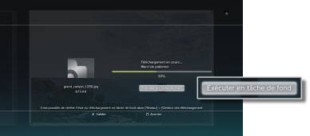
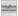
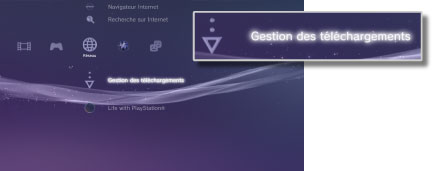

Réseau > Télécharger en tâche de fond
Télécharger en tâche de fond
Le téléchargement en tâche de fond est une fonctionnalité permettant d'exécuter d'autres opérations pendant le téléchargement de plusieurs éléments de données ou de données contenues dans un fichier de grande taille. Cette fonction n'est disponible que si l'option [Exécuter en tâche de fond] apparaît sur l'écran affiché pendant le téléchargement du contenu.

Conseils
- Selon le type ou le nombre de données téléchargées, il se peut que vous ne puissiez exécuter un téléchargement en tâche de fond.
- Une installation peut être nécessaire pour utiliser des données téléchargées telles que des jeux ou des fichiers vidéo. Lorsque le téléchargement est terminé, les données à installer s'affichent en tant que
 ou
ou  dans chaque catégorie.
dans chaque catégorie. - Le téléchargement en tâche de fond n'est pas nécessairement disponible lorsque le disque dur contient des données non installées.
- Si le système PS3™ est mis hors tension pendant un téléchargement en tâche de fond, l'état du téléchargement est enregistré. Le téléchargement redémarre automatiquement la prochaine fois que le système PS3™ est mis sous tension et est connecté à Internet.
- Un téléchargement en tâche de fond s'interrompt temporairement lorsque vous exécutez une des opérations ci-dessous. Le téléchargement redémarre automatiquement dès que l'opération est terminée.
- - Lors de la lecture d'un disque Blu-ray Disc ou d'un DVD
- - Lors de l'utilisation des fonctions réseau des jeux en ligne*
- - Lors du lancement d'un logiciel au format PlayStation®2
- - Lors du lancement de

(Folding@home™) - - Lors de l'utilisation du chat vocal / vidéo
- - Lors de l'exécution d'une mise à jour du système
- - Lors du réglage de certains paramètres sous
 (Paramètres)
(Paramètres)
*
Lorsqu'un jeu va se terminer, le téléchargement en tâche de fond s'interrompt temporairement.
Avis
- Il est possible que certains titres de logiciels au format PlayStation®2 ou PlayStation® fonctionnent différemment avec le système PS3™ par rapport aux systèmes PlayStation®2 ou PlayStation®, ou qu'ils ne fonctionnent pas correctement avec le système PS3™.
- En outre, certains logiciels au format PlayStation®2 ne peuvent pas être lus sur certains systèmes PS3™. Pour plus d'informations, consultez [Types de disques lisibles], visitez le site Web SCE de votre région ou reportez-vous à la documentation qui accompagne votre système PS3™.
Gestion des téléchargements
Cette option s'affiche uniquement lorsqu'un téléchargement en tâche de fond est en cours d'exécution. Vous pouvez vérifier l'état du téléchargement ou annuler le téléchargement de données téléchargées à partir de  (Navigateur Internet) ou de
(Navigateur Internet) ou de  (PlayStation®Store). Sélectionnez
(PlayStation®Store). Sélectionnez  (Gestion des téléchargements) sous
(Gestion des téléchargements) sous  (Réseau).
(Réseau).

Vérification de l'état de téléchargement
Sélectionnez l'icône des données dont vous souhaitez vérifier l'état de téléchargement, appuyez sur la touche  , puis sélectionnez [Etat] dans le menu d'options.
, puis sélectionnez [Etat] dans le menu d'options.
Annulation du téléchargement
Sélectionnez l'icône des données dont vous souhaitez annuler le téléchargement, appuyez sur la touche , puis sélectionnez [Annuler] dans le menu d'options. Une fois le téléchargement annulé, il est supprimé de (Gestion des téléchargements).
Suspension / reprise des téléchargements
Sélectionnez l'icône des données dont vous souhaitez suspendre le téléchargement, appuyez sur la touche , puis sélectionnez [Pause] dans le menu d'options. Pour reprendre le téléchargement, appuyez à nouveau sur la touche et sélectionnez [Reprendre] dans le menu d'options.
Conseils
- Si vous suspendez le téléchargement,
 s'affiche avec l'icône.
s'affiche avec l'icône. - Si vous suspendez un téléchargement alors que vous téléchargez plusieurs éléments de données, le téléchargement de l'élément de données suivant démarre automatiquement.
Suspension de tous les téléchargements
Sélectionnez l'icône d'un téléchargement, appuyez sur la touche , puis sélectionnez [Tout en pause] dans le menu d'options.
Reprise de tous les téléchargements
Sélectionnez l'icône d'un téléchargement, appuyez sur la touche , puis sélectionnez [Reprendre tout] dans le menu d'options.